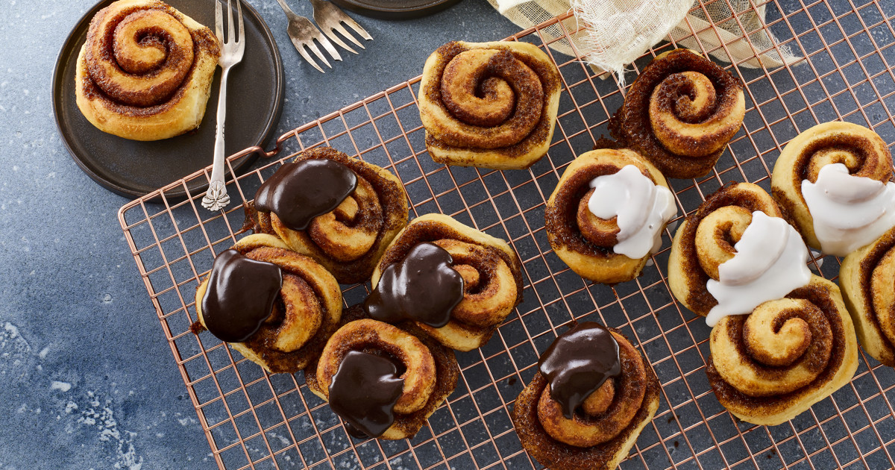

Chocolate Chip Cookies

Description
The best cinnamon rolls are homemade - freshly baked, soft and gooey.
These easy cinnamon rolls suit both the morning table on the weekends and
the afternoon tea. Bake these delicious rolls and serve freshly baked with
frosting.
Ingredients
Cinnamon rolls
- Roomtemp Butter - 100g
- Milk - 2 dL
- Cake yeast - 25g
- Eggs - 2
- Flour - 600g
- Cardamom - 2 tsp
- Salt - 1 tsp
- Whisked egg for egg wash
Remonce
- Roomtemp butter - 200g
- Brown sugar - 200g
- Cinnamon - 1-1.5 tbsp
Frosting
- Powdered sugar - 2 dL
- Water - 1½ tbsp
- (Optional) Cocoa powder
Steps
Rolls
- Mix yeast and milk in a bowl.
- Add rest of ingredients, withhold 100g of flour.
- Knead ingredients together, add rest of flour as needed.
The dough should still be sticky, but smooth, when finshed.
-
Let the dough rest and rise for 30 mins.
Remonce
Mix butter, brown sugar and cinnamon well.
Assembly and baking
- Turn out dough on a floured surface.
Roll the dough to and rectangular sheet (Approx. 30x50 cm)
Spread remonce on the sheet.
- Roll the sheet on the longer side and slice 20-25 rolls
- Put the rolls in a baking pan covered with parchment paper.
Let them rise for another 15 min.
-
Brush the rolls with the egg wash.
- Bake for 10-12 min at 225°C - conventional oven
- Let the rolls cool and decorate with frosting